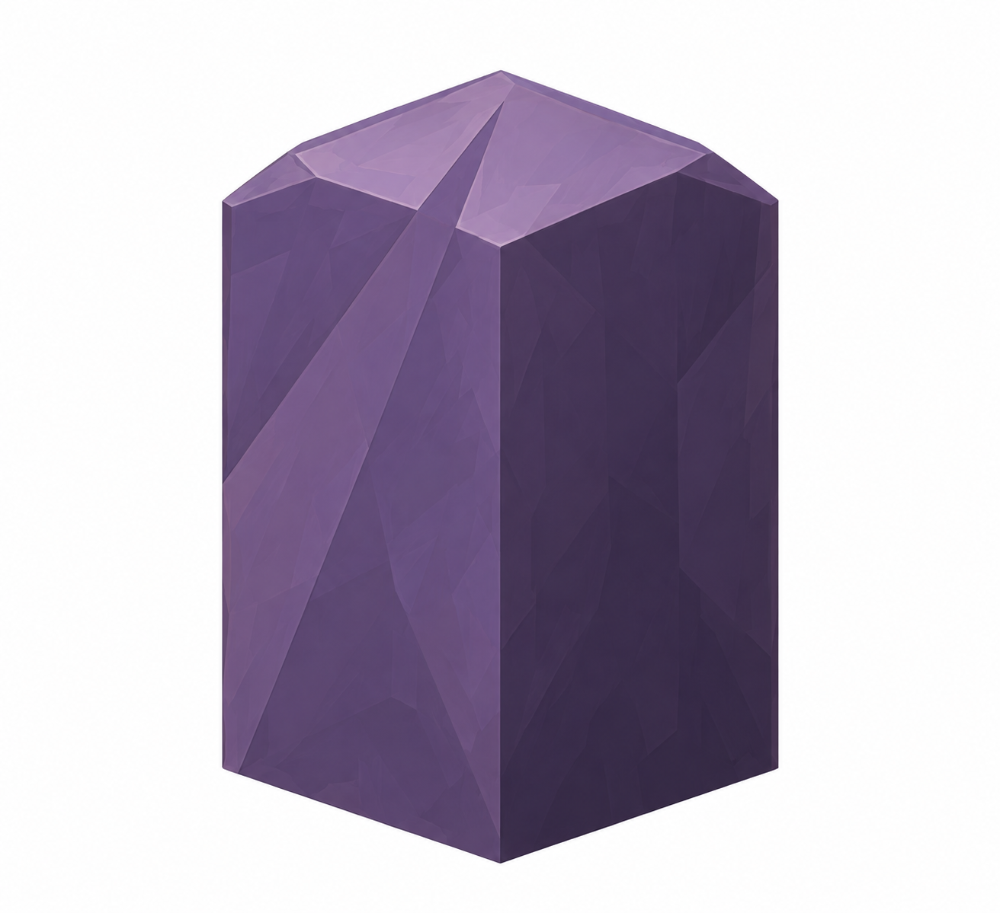
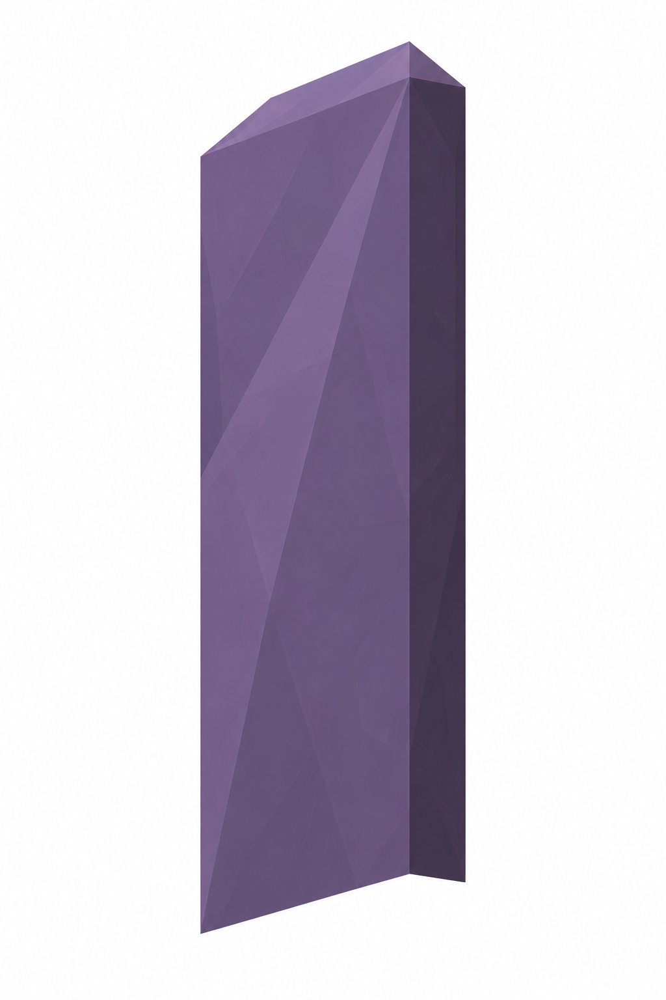
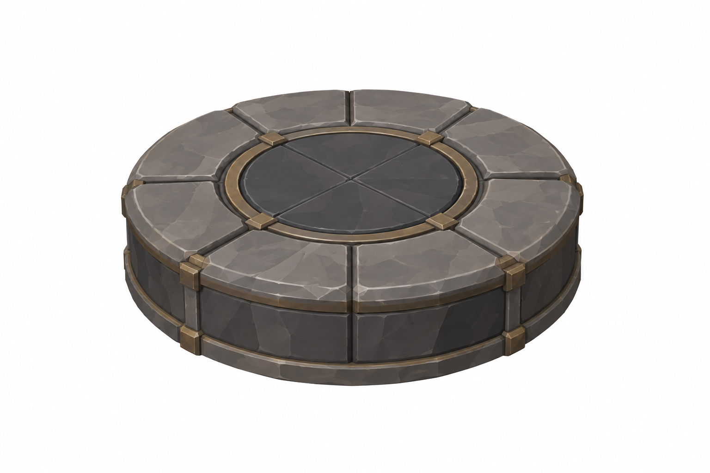
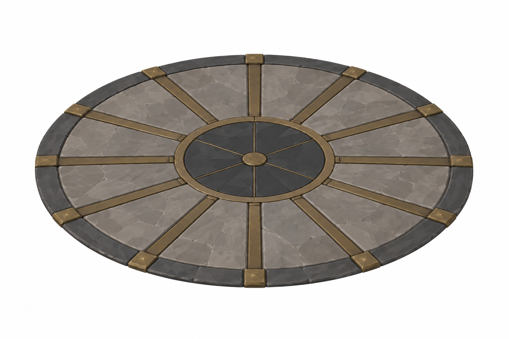
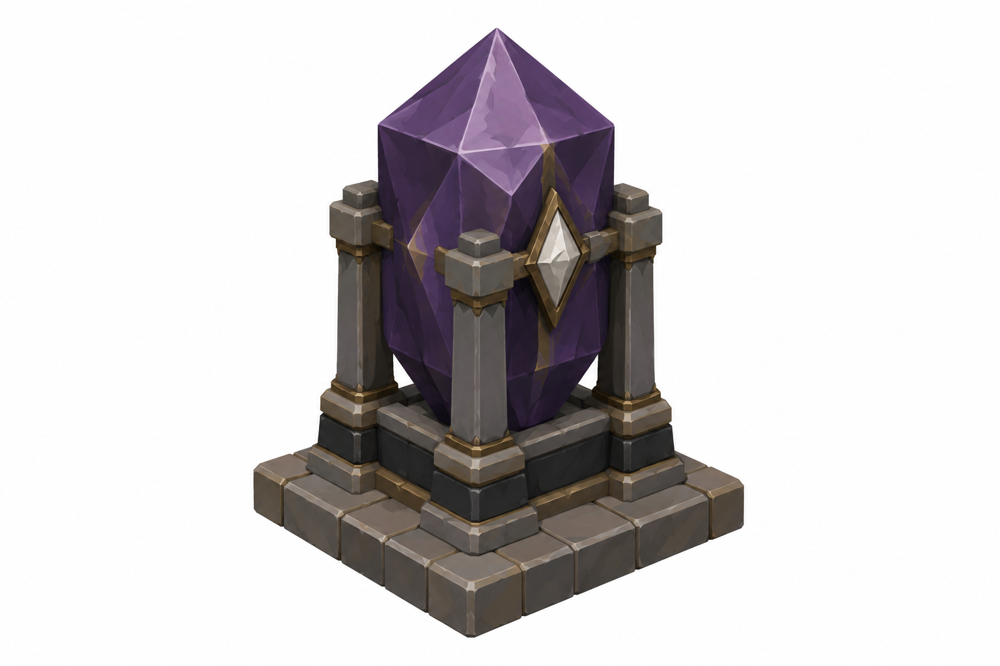
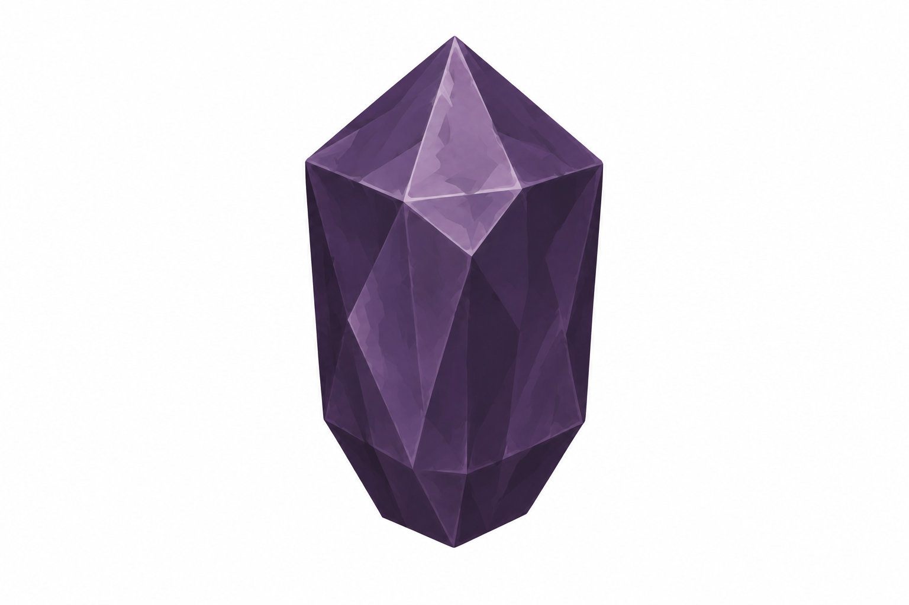
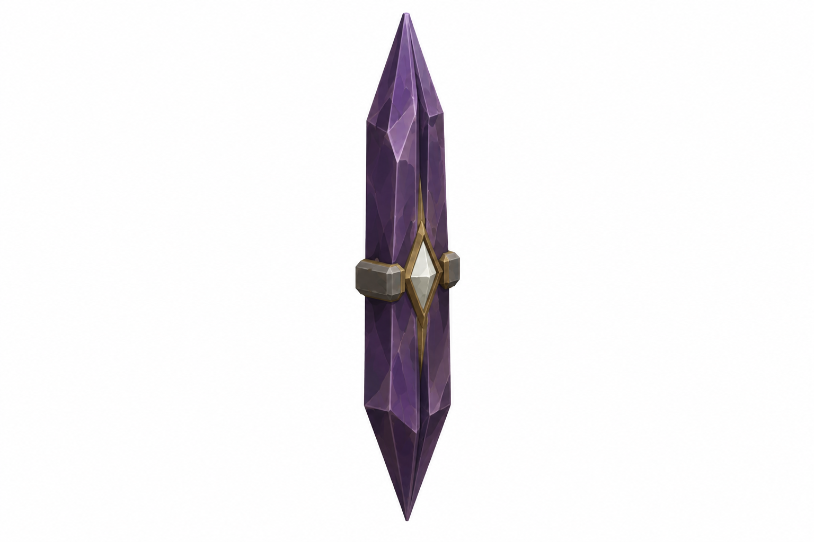
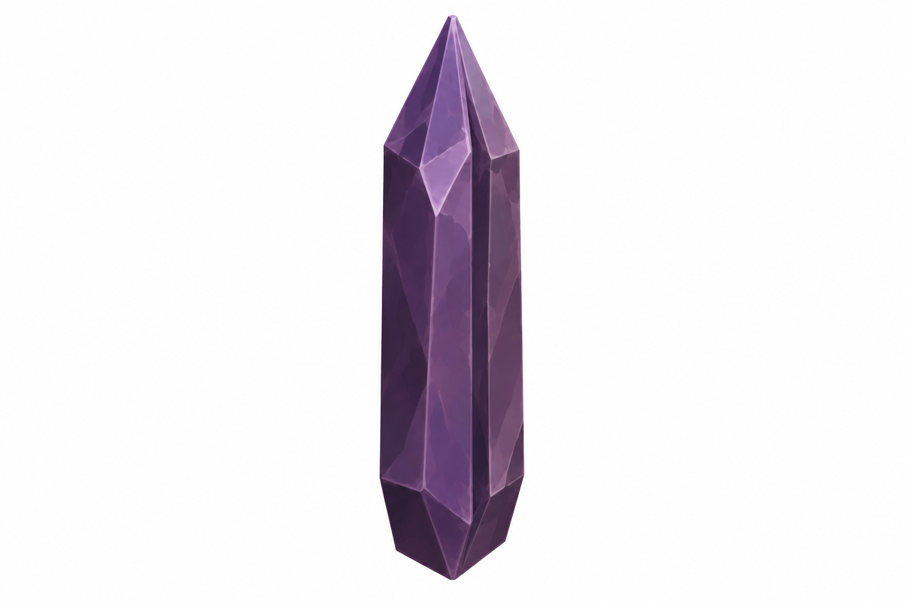

Görseller tasarım referansıdır. Ölçüler hedef sayılarıdır; raster oranları yaklaşık, gerçek mesh/Unity fit doğrulanmadı. Tripo'ya geçilmedi. Git/Jira gönderimi bu taslak için yapılmadı.
Ölçek / materyal durumları · teknik şema
Şema hedef ölçüdür; yeni mesh veya başarılı final referans sayılmaz. Ironhide/Keen yeni ölçülü brief yaklaşımıyla v004 olarak düzeltildi. ReadySpentMesh değişmez, cracks yok; ember/light off. Her noktada 3variant bulunur, yalnız dealt one görünür.
Tekil45° referanslar
 Quickened · total floor height2.6–2.8 m; footprint≤0.5²Style/semantic review completed; exact proportions and mesh fit remain unverified.
Quickened · total floor height2.6–2.8 m; footprint≤0.5²Style/semantic review completed; exact proportions and mesh fit remain unverified.
Ironhide · 1.0 ×1.0; totalH1.9 mÖnceki iki deneme reddedildi. Kullanıcının yeni brief yönü sonrası ölçülü geometri + stil panosu ile v004; geniş block/blade ve düz taban incelendi, gerçek mesh fit henüz doğrulanmadı.
Keen · 0.9 ×0.25; totalH2.4 mÖnceki iki deneme reddedildi. Kullanıcının yeni brief yönü sonrası ölçülü geometri + stil panosu ile v004; geniş block/blade ve düz taban incelendi, gerçek mesh fit henüz doğrulanmadı.
SharedPlinth · Ø1.6 ×H0.24 mStyle/semantic review completed; exact proportions and mesh fit remain unverified.
RadialFloor · Ø4 m; flush≤0.03Style/semantic review completed; exact proportions and mesh fit remain unverified.Reddedilmiş v002/v003 denemeler
İlk iki yaklaşım onay için seçilmedi; QA kaydı korunur.

Ironhide v002 · kaide/sütun birleşti
Ironhide v003 · sivri alt taban
Keen v002 · needle/fittings
Keen v003 · needle oranı kaldı